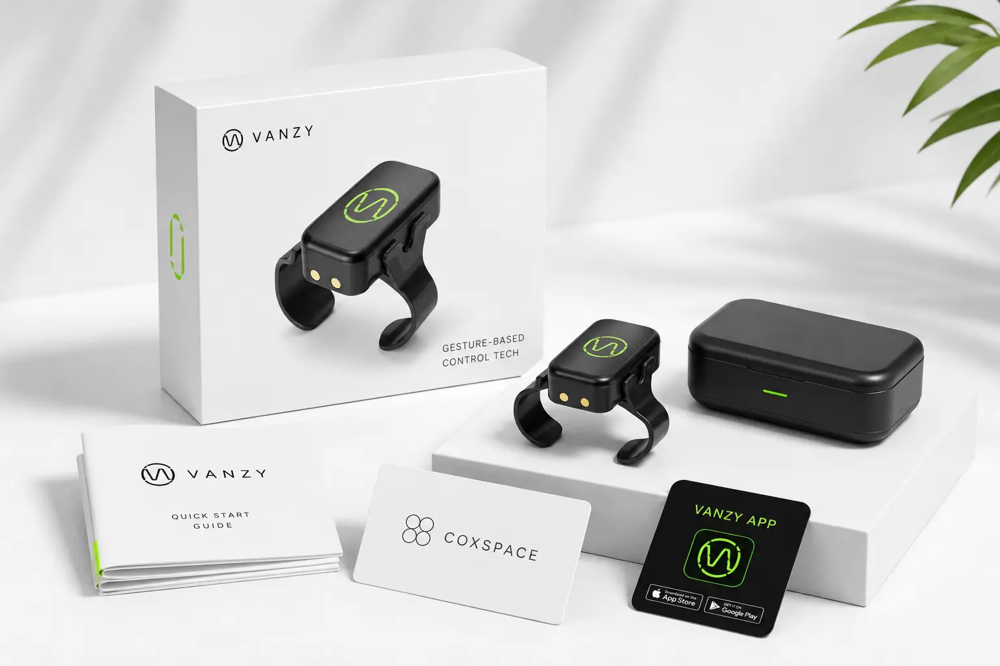
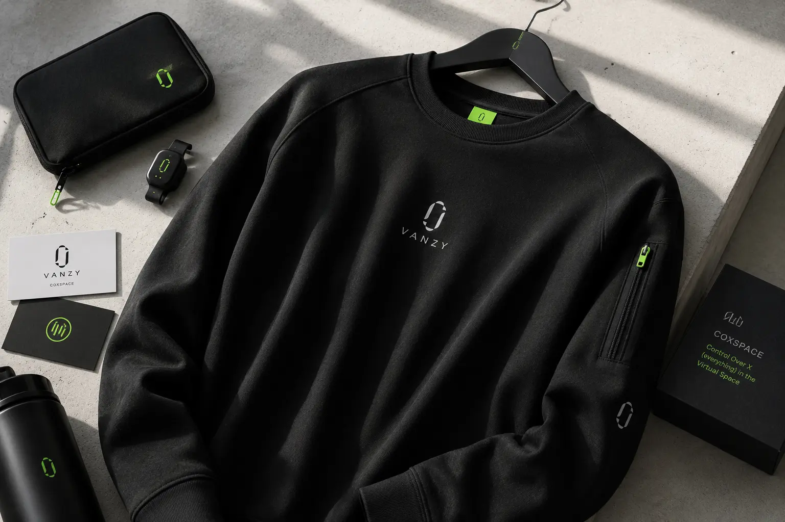
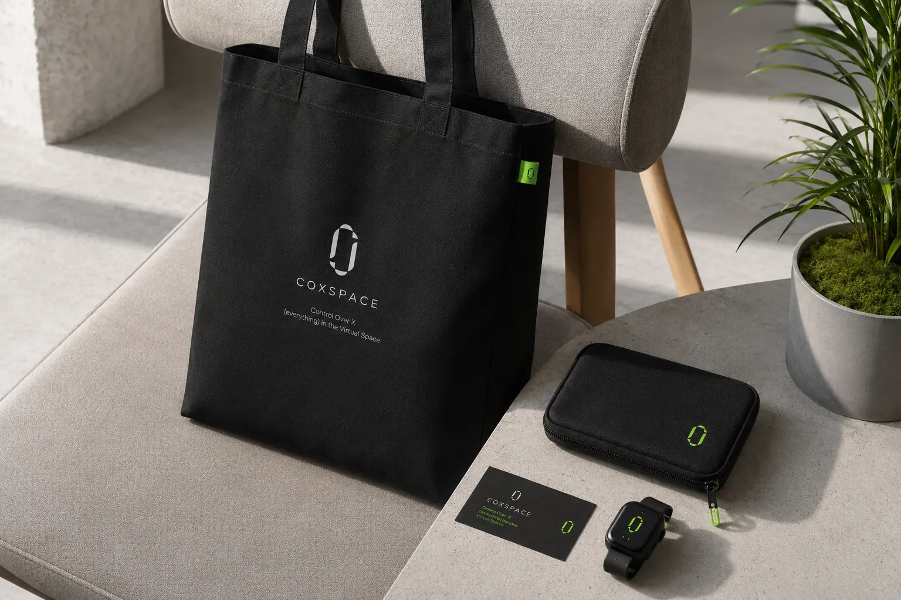
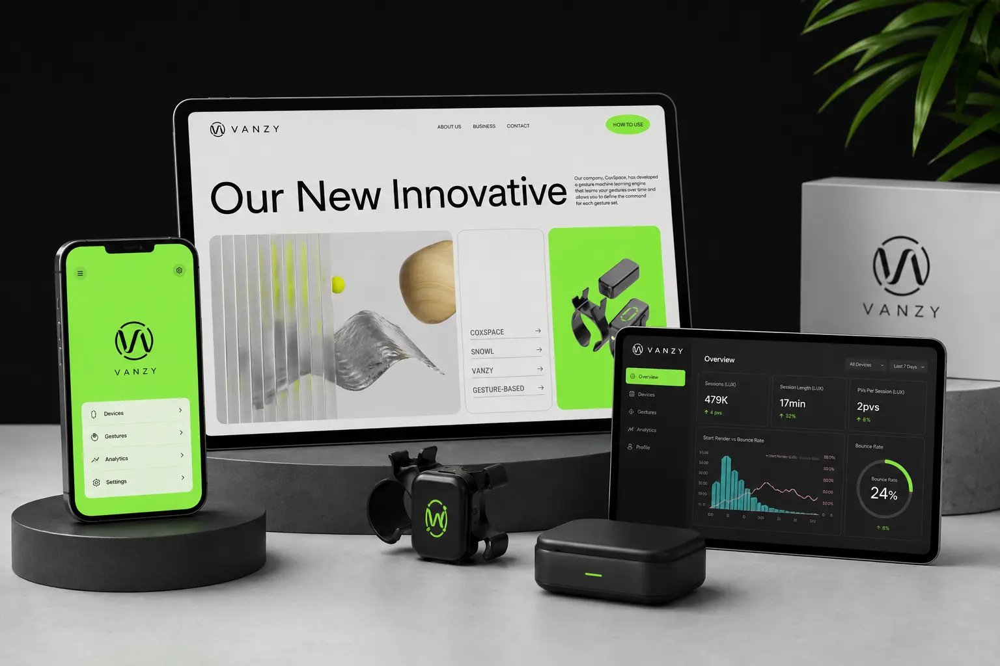
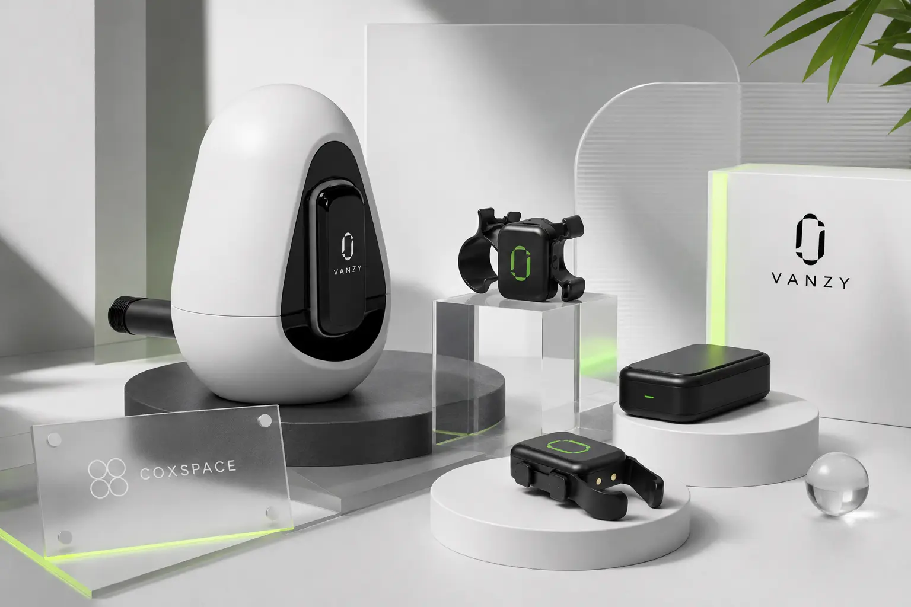
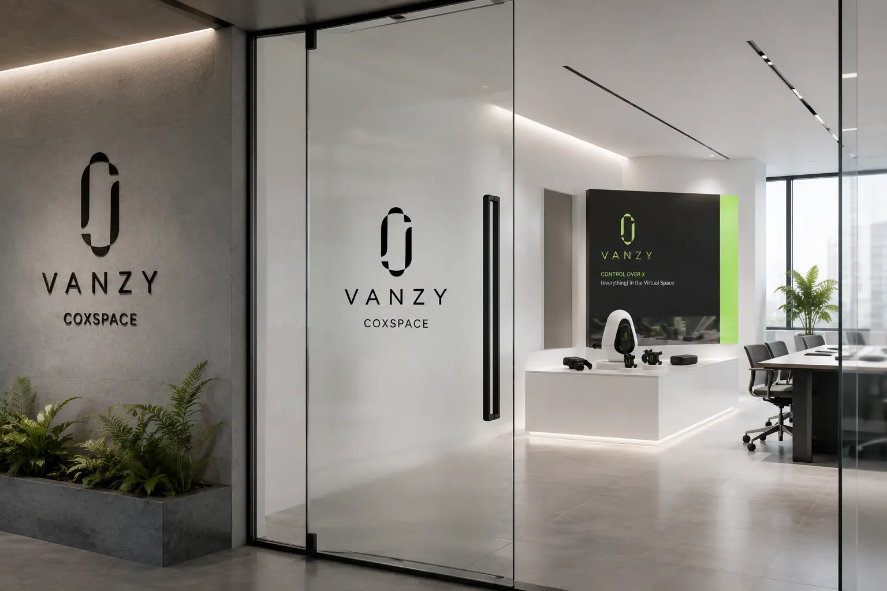
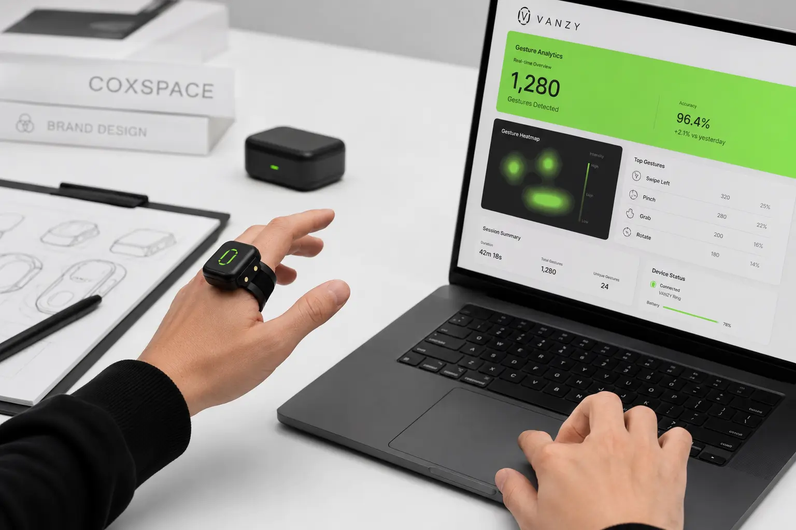

VANZY의 목표는 사용자가 더 직관적이고 자유로운 방식으로 디지털 공간을 제어할 수 있도록 만드는 것이다. 손가락에 착용하는 웨어러블 디바이스를 통해 터치, 클릭, 마우스, 컨트롤러 중심의 기존 조작 방식에서 벗어난 새로운 사용 경험을 제안한다. 웹사이트, 모바일 앱, 대시보드 화면에서는 제품 연결, 제스처 설정, 사용 데이터 분석 등 핵심 기능을 직관적으로 보여준다. 패키지와 오피스, 굿즈, 앱 화면까지 동일한 시각 언어를 적용해 기술 브랜드로서의 신뢰감과 완성도를 높인다. 최종적으로는 VANZY를 가상공간과 현실의 움직임을 연결하는 차세대 컨트롤 테크 브랜드로 자리 잡게 하는 것을 목표로 한다.
Portfolio / Brand Identity
VANZY
VANZY는 손동작과 제스처를 기반으로 가상공간을 제어하는 웨어러블 컨트롤 테크 브랜드이다. 브랜드는 물리적인 입력 장치 없이 사용자의 움직임을 인식하고, 디지털 환경과 자연스럽게 연결되는 새로운 인터페이스 경험을 제안한다. COXSPACE라는 서비스 영역을 통해 가상공간 안에서의 제어, 분석, 연결 기능을 함께 확장하는 구조로 보인다. 전체적인 무드는 블랙, 화이트, 네온 그린을 중심으로 구성되어 있으며, 미래지향적인 기술성과 세련된 제품 이미지를 동시에 전달한다. VANZY는 단순한 디바이스 브랜드가 아니라, 제스처 기반 인터랙션을 통해 가상공간 사용 방식을 새롭게 만드는 테크 라이프스타일 브랜드로 설계되었다.
- Scope
- Brand Identity / Lifestyle
- Studio
- BDLab
- Year
- 2026

VANZY의 핵심 메시지는 “Control Over X, Everything in the Virtual Space”로 정리할 수 있다. 이는 사용자가 가상공간 안에서 더 넓은 범위의 기능과 대상을 자유롭게 제어할 수 있다는 의미를 담고 있다. 브랜드는 복잡한 기술 설명보다 손동작, 제스처, 연결, 제어라는 직관적인 키워드를 중심으로 메시지를 구성한다. “Gesture-Based Control Tech”라는 표현은 제품의 기능과 기술적 정체성을 직접적으로 보여주며, 사용자가 브랜드의 역할을 빠르게 이해하도록 돕는다. 전체적으로 VANZY는 제스처 제어, 가상공간 연결, 새로운 인터페이스 경험이라는 메시지를 중심으로 브랜드 방향성을 전개한다.
VANZY의 디자인은 블랙과 화이트의 선명한 대비 위에 네온 그린 포인트를 더한 미래지향적 테크 무드가 핵심이다. 제품은 매트한 블랙 소재를 중심으로 구성되어 있으며, 심볼과 LED 포인트에 그린 컬러를 적용해 기술적이고 감각적인 인상을 만든다. 패키지와 문서, 카드, 앱 화면은 넓은 여백과 간결한 그래픽을 활용해 복잡한 기술 제품을 깔끔하고 직관적으로 보이게 한다. 공간 적용에서는 콘크리트, 유리, 메탈 소재와 함께 로고를 배치해 하이테크 기업의 전문성을 강조한다. 디자인 전반은 차갑고 기능적인 기술 이미지에 네온 컬러의 에너지를 더해 VANZY만의 선명한 인상을 만드는 방향으로 설계되어 있다.





